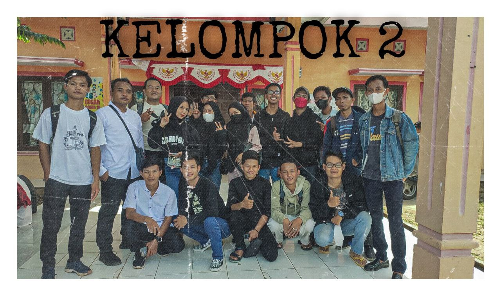
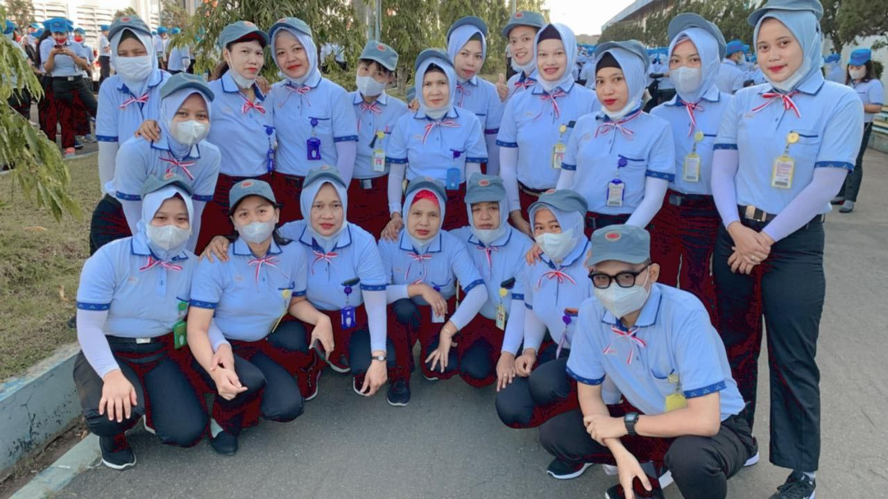
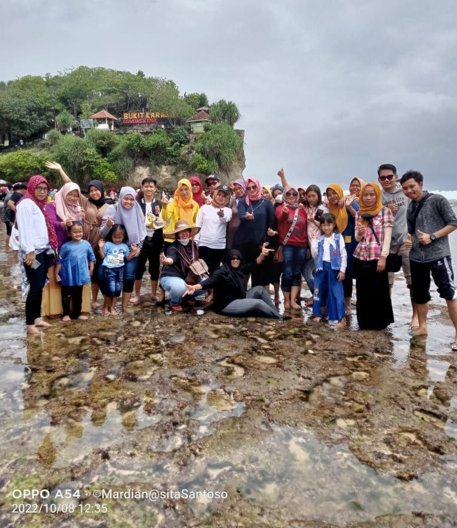
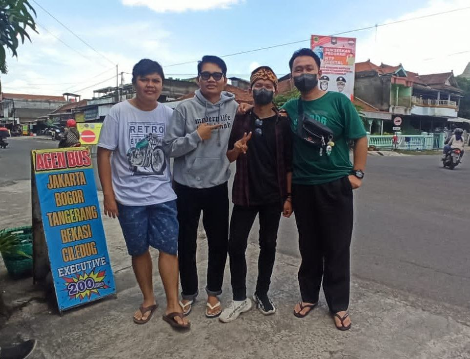
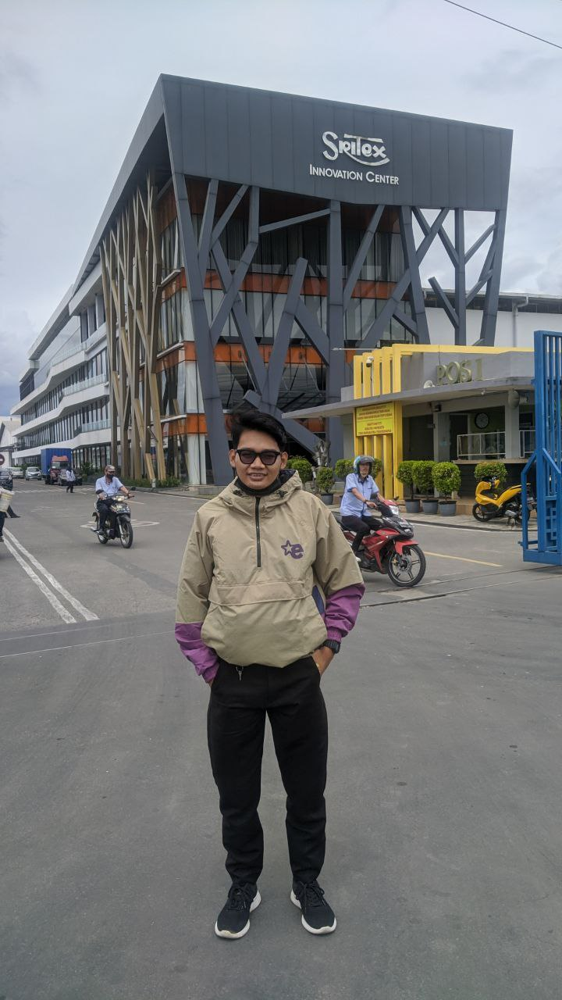
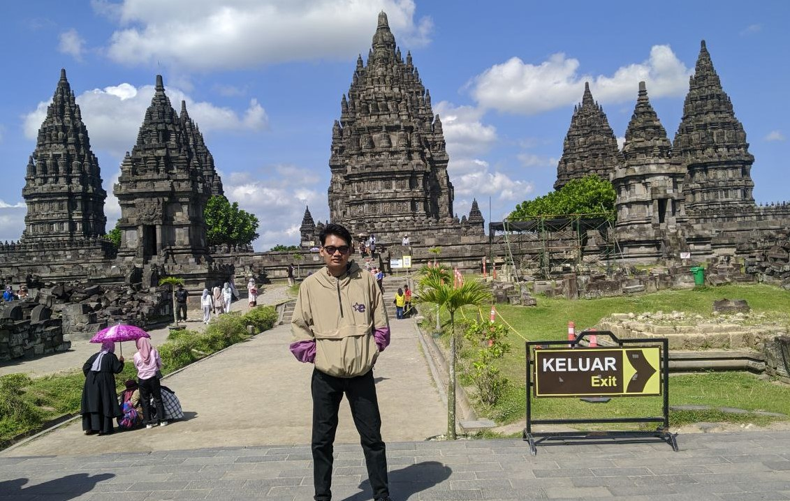
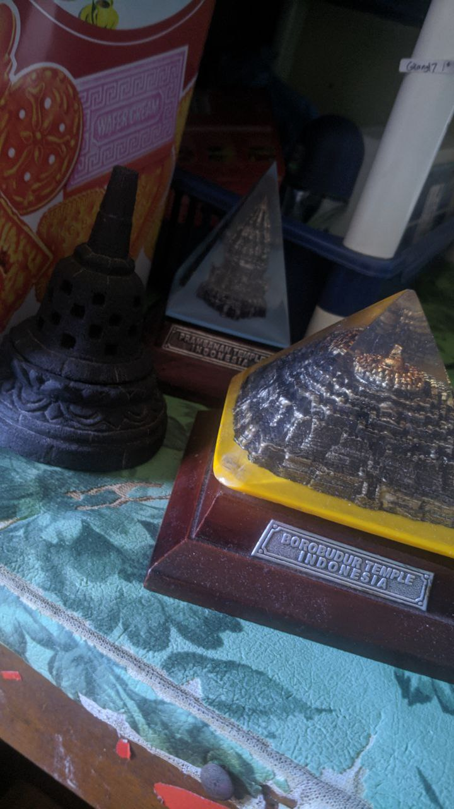
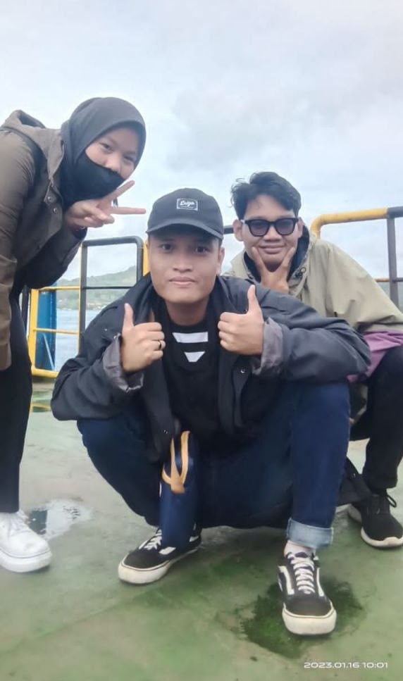

2022
22
Awal kehidupan seorang introvert berumur 23thn dimulai. Hai nama ku Gilang Ramanda Purba biasa dipanggil Gilang aku tinngal dikota Prabumulih salah satu kota terkecil diProvinsi Sumatera Selatan dengan jumlah penduduk sekitar 199.047 jiwa dengan luas wilayah sekitar 251,94 kilometer persegi.
Saya anak kedua dari ketiga bersaudara saya seorang introvert. Memasuki tahun 2022 tahun dimana usia menginjak umur 23thn umur dimana secara kita sudah dewasa secara pikiran maupun perbuatan, memasuki fase dewasa kita “dipaksakan” untuk tumbuh mandiri dengan umur yang sudah dikatakan layak untuk berselancar keluar apalagi sudah mendapatkan title sarjana yang didapat dengan cukup lama empat thun lama nya. Setelah resmi diwisuda diakhir tahun desember 2021 tahun dimana memasuki hari raya natal dan tahun baru 2022 diakhir tahun itu pula tak lupa kupanjat kan doa agar semuanya berjalan dengan baik dan lancar tanpa adanya halangan.
Awal bulan baru
Mengawali bangun pagi dengan membuat kopi hitam favoritku sambil membuka laptop dan mempersiaspkan membuat cv yang layak untuk mencoba melamar – lamar pekerjaan yang sedang dibuka dengan optimis pagi hari ku coba memasukan cv saya kebeberapa perusahaan yang sedang ada pembukaan lowongan kerja. Hari berganti hari waktu begitu cepat bagi seorang pengganguran. Tidak ada kegiatan lain selain makan dan tidur haha, Setiap hari memantau lowongan kerja mana yang sedang buka dan mengapplynya. Tak terasa waktu pun sudah menjelang malam, waktu yang biasa saya habiskan buat nongkrong bareng teman – teman melepas canda dan tawa dan juga menambah relasi siapa tau bisa mendapat info lowongan kerja hehe. Hari teras begitu cepat dan sudah memasuki bulan selanjutnya berganti hari kegiatan ku seperti biasa tidak ada perubahaan dan juga tidak kunjung dapat panggilan kerja.
Maret
Memasuki awal maret dengan optimis slalu pasti bisa dan mencari info – info pembukaan lowongan kerja seperti biasa. Setelah mencari – cari info lowongan kerja saya mendapatkan info bahwa ada pembukaan lowongan kerja dari Disnaker Kota Prabumulih yang akan memberangkatkan ke PT.SRI REJEKI ISMAN.TBK salah satu pabrik garment terbesar diindonesia, disitu saya tidak menyenyiakan kesempatan dan mengajak teman buat ikut akhirnya kita berdua ikut dan mulai menyiapkan berkas yang diperlukan, memasukan lembar demi lembar yang diperlukan.
Latihan
Hari pemberintahuan lolos seleksi admnistrasi telah keluar dan yang lolos dikumpulkan diLembaga Pelatihan Kerja (LKP) untuk dilaksankan pertemuan dengan panitia mengenai PT yang akan diberangkatkan dan kita juga melalukan diskusi obrolan tanya jawab dan juga diberikan pembekalan sebuah pelatihan dibidang garment mulai dari operasi mesin, memasang benang ataupun jarum dan proses jadi nya produk yang dihasilkan.

Gambar 1. foto kelompok diLembaga Pelatihan Kerja
Latihan #2
Hari berganti hari kami jalanin dilembaga pelatihan kerja waktu yang kami habiskan begitu lama sehingga ada teman – teman memilih mengundurkan diri karena tidak tahan begitu lama kami berangkat dan aku pun sudah jenuh dengan itu teman ku juga merasakan hal yang sama kami pun memutuskan untuk mencoba bertahan sampai lowongan kerja kami ada yang diterima. Tak terasa memasuki bulan baru semakin jenuh aja masih tidak adanya info pemberangkatan hari berganti hari – hari kami lakukan dengan pelatihan yang begitu lama. Pada akhirnya tiba waktu pemberangkatan pada tanggal 4 juli 2022 kami pun senang dan gembira hari yang dinanti nanti telah tiba, setelah melakukan kegiatan pelatihan yang cukup lama selama sekita empat bulan. Kami pun diberangtan dari rumah dinas walikota Prabumulih dan dilepas oleh walikota beserta jajaran kota prabumulih sekitar jam Sembilan bus kami keluar dari komplek rumah dinas walikota.
Hari Pertama
Tepat di tanggal 6 bus kami sampai diSukoharjo Jawa Tengah betapa senang dan bangganya kami sudah sampai dengan selamat, disinilah kami akan memulai hidup baru dengan mandiri tanapa adanya orang tua disisi kita, begitu kaget dan kagum ketika bus memasuki gerbang yang begitu besar seperti layaknya bandara dan begitu enak dipandang bangunan yang begitu besar dan luas perjalanan kami begitu jauh dari gerbang sampai ke gedung serbaguna itu membuktikan bahwa PT tersebut begitu besar, tiba lah digedung serbaguna PT.SRI REJEKI ISMAN.Tbk disambut oleh jajaran – jajaran yang ada disana kita diberikan pembekalan ilmu mengenai PT ini dan melakukan tes fisik, seletah dari PT kami ditempatkan di mess milik PT tersebut. Keesokan paginya kami bersiap bergegas menuju pabrik dengan semangat pagi dengan memakai baju kemeja putih rapi layaknya seorang karyawan pada umum, kita dikumpulkan lagi di gedung serbaguna untuk menanda tangani kontrak kerja dan juga dilakukan diskusi dengan jajaran terkait. Keesokan paginya kami pergi lagi untuk menjadi karyawan PT.SRI REJEKI ISMAN.Tbk untuk melaksanakan tugas pertama sebagai karyawan baru dan saya sangat kagum dengan PT ini yang begitu luasnya, memasuki kedalam garment disambut salah satu jajaran garment disana ditraning mengenai fungsi, tugas, serta tanggung jawab apa saja sebagai seorang Quality Assurance (QA) dipabrik garment. Hari berganti hari saya jalani sebagai seorang karyawan PT dan tidak terasa sudah memasuki hari yang ditunngu – tunggu yaitu gajian hehe, hari yang membikin kita semua tersenyum bahagia dengan dibagikannya slip gajian dan membukanya saya merasa senang dan bangga serta bersyukur atas apa yang telah ku dapatkan walaupun tidak begitu besar, tapi saya tetap mensyukuri apa yang didapat dengan kerja keras saya selama satu bulan ini. Hari berganti hati jauh dari keluarga membuat saya tumbuh menjadi lebih dewasa membuat saya bisa mengontrol kuangan sendiri, mandiri, mensyukuri apa yang didapatkan, menghargai sudut pandangan orang. Setiap hari dijalani bagi seorang karyawan bangun pagi pulang hanya untuk numpang tidur. Memasuki hari Weekend kita biasa habiskan dengan berkegiatan disawah mulai dari mancing kepiting atau sekedar jalan biasa atau enggak biasanya ke alun – alun satya Negara sukoharjo.

Gambar 2. Hari pertama di PT.SRI REJEKI ISMAN TBK.
Agustus
Tak terasa sudah memasuki bulan Agustus dikota orang sebagai karywan dan masih seperti biasa bangun dipagi hari yang cerah dengan air yang super dingin sekali berbanding jauh dengan cuaca yang ada disumatra dan saya masih tidak menyangka bisa ada disini, bekerja seperti khalayak orang pada umunya bertemu dengan teman baru walaupun tidak mengerti bahasanya haha, tapi enjoy tetap menikmanti waktu yang ada. Memasuki tanggal hari raya kemerdekaan biasanya disini PT mengadakan acara – acara khusus untuk menyambut itu tapi tahun ini tidak ada, dan cuman diadakannya upacara Hut RI dihalaman area Sritex, upacara itu tidak semua bisa ikut hanya dibatasin diiukuti oleh 1000 tamu undangan dan 30.000 karyawan saja. Awalnya saya tidak terpilih didalamnya dan saya cukup senang juga hehe karna bisa tidur pulas dimess, tpi tidak h-1 saya dibilang ikut serta sebagai pengganti karyawan yang tidak bisa hadir karena sang istrinya sakit, otomatis saya wajib ikut upacara, huftt urung tidur pulas hehe, tapi tidak apa – apa untuk pertama kalinya saya mengikuti upacara bendera sebagai karyawan moment yang akan selalu saya akan ingat . Selama perjalanan masuk keare tempat berlangsungnya upacara ada begitu banyak orang yang sudah berkumpul memadati area lapangan untuk siap – siap dilaksanakannya upacara bendera, sebelum upacara berlangsung kita berkumpul dengan line masing – masing dan mengobrol bercengkrama dengan para senior disana ngobrol sana – sini pada akhirnya upacara pun akan segera dimulai dengan adanya tanda – tanda dari komando. Selama upacara berlangsung untuk pertama kalinya saya kagum begitu banyak orang dengan badan tegap dan rapi upacara berlangsung dengan khidmat, upacara sendiri dipimpin oleh Presiden Direktur PT SRI REJEKI ISMAN Tbk, Iwan Setiawan Lukminto. Acara Hut RI pun selesai sebagain orang diperbolehkan pulang dan ada juga menonton pertunjukan baris berbaris.

Gambar 3. Berfoto bersama rekan kerja sebelum pelaksanaan HUT RI
Liburan
Hari – hari ku jalani sepeti karyawan Sritex pada umum bangun pagi, kerja, makan. tidur dan begitulah kegiatan sehari – hari seorang karywan, suntuk sudah pasti ada itu hal normal, tiba lah waktu kita jalan – jalan melepas stress haha, pada tanggal 08 Agustus kita berangkat dari Sritex liburan kali ini kita mengunjungi pantai indrayanti, dan pantai sunduk , agak bosan dan jenuh juga liburan didua tempat yang sama pantai ke pantai lagi tapi apa boleh buat nikamti saja, selama perjalanan saya melihat – lihat track jalan medan jawa yang begitu indah yaa walapun ada tempat akses kearah agak curam dan sempit untuk dilalui oleh bus, walaupun begitu kami didalam bus tidak merasakan bosan selama perjalanan karena seiisi bus sehumble gitu kita bernyanyi bersama, ngobrol bercanda bersama, berbagi makanan. Liburan kali ini begitu luar biasa segar dan fresh semua beban yang ada begitu lepas semua saat berlibur bersama.

Gambar 4. Liburan bersama dipantai
Bulan 10
Tiada hari tiada hujan tiba – tiba teman seperjuangan ku memustukan untuk risen, huftt agak berat saya mendengar kabar itu sedih rasanya ditinggal sahabat seperjuangan teman dari SMA selalu bersama sampai dititik kita berangkat kesini selalu bareng – bareng, tapi apa boleh buat saya tidak bisa memaksakan kehedak dia, itu udah jadi kehendak dia. Tepat pada tanggal 23 Oktober waktu yang tidak saya inginkan terjadi jadwal bus pemberangkatan mereka sudah tiba dan sedih sudah pasti membekas mengingat tidak ada lagi kawan akbrab yang biasa kami habiskan buat main bersama, saat suntuk pulang kerja teman ada buat ngobrol sekerang terasa hampa tiada teman yang menemani dan pada akhirnya semuanya juga akan berakhir dengan sendiri – sendiri. Bangun dipagi hari dengan tidak penuh semangat setelah ditinggal teman seperjuangan biasanya kita berangkat bareng, ngobrol bareng, bahkan terkadang kita juga mendapatkan waktu yang sama saat istirahat, hidup ku begitu hampa setelah mereka pergi. Hari berganti – hari kehidupanku sudah mulai sedikit melupakan kenangan indah bersama teman agak berat tapi aku bisa menjalani itu. Sering kami melakukan Video Call untuk mengingat kejadian kita waktu diSolo ini ada rasa sedih saat mendengar suara kawan yang dulu tiap hari kudengar mengingat kembali kejadian bareng teman disini huftt sedih rasanya.

Gambar 5. Perpisahan sama teman
Desember
Hari berganti – hari sudah tidak terasa memasuki bulan desember bulan akhir tahun, tahun hari raya perayaan natal dan tahun baru, biasa saya merasa natal didaerah saya kali ini tidak saya dipulau beda merayakan natal. Hari – hari kujalani dengan penuh semangat menyambut akhir tahun dan berharap mendapatkan tahun yang lebih baik di tahun kedepannya, momen tidak terduga pun terjadi saya harus kehilangan teman saya dia orang Wonigiri memutuskan untuk risen agak berat dan sedih juga mengingat saya dengan dia begitu dekat kita tiap hari ketemu ditempat kerja, ngobrol bareng, ketawa bareng, huftt tapa boleh buat saya tidak bisa memaksa kehendak dia segala upaya sudah saya coba tapi emang tidak bisa, sebelumnya saya tau dia mau risen kita sering curhat bersama jadi saya tau masalah apa yang terjadi pada dia. Akhir tahun pun tiba waktu dimana saya berkumpul dengan anak Prabumulih walaupun tidak banyak masih beruntung kita bisa merasakan tahun baru walaupun hanya sedikit, kita semua memiliki persamaan yang sama semga ditahun baru kita memiliki kehidupan lebih baik lagi dari tahun ini.
Januari 2023
Awal bulan ditahun yang baru ini, aku memutuskan untuk risen dari PT ini, ada beberapa masalah yang dihadapi, keputusan yang sulit bagi saya mengingat saya sudah begitu nyaman disini teman – teman orang Jawa begitu asik. Saat menulis surat pengunduran diri saya merasa ini berat buat saya sedih rasanya untuk meninggalkan ini tapi apa boleh buat karna setiap ada pertemuan pasti ada perpisahaan. Tiba hari dimana saya mengantarkan surat pengunduran diri saya tepat tanggal 03 – januari – 2023 saya mengantarkan surat itu ke SPV sebelum menuju PT saya sempat meyempatkan untuk mengobrol dengan teman saya untuk melepaskan kesedihan saya sebelum memasuki area PT, setelah asik mengobrol hamper satu jam saya pun memutuskan untuk menuju PT agak berat saya melangkah dan pada akhirnya saya berhenti sejenak didepan area saya menunduk sambil meminum minuman dingin yang saya beli warung depan PT dengan berat saya memasuki area saya memandangi gedung PT ini begitu besar dan indah mengingat ini akan menjadi kenangan terakhir bagi saya tidak akan melihat lagi gedung – gedung ini, sampai kedalam garment orang – orang melihat saya dengan begitu tegang saya menyampiri tempat saya dan melihat teman – teman yang saya yang sedang bekerja agak sedih rasanya saya pun menahan tangis ketika berpamitan dengan teman – teman ada yang menangis saya pun rasanya ingin nangis juga. Keesokan hari saya menjadi seorang penggaguran sedih rasanya biasa bangun pagi ketemu teman – teman menyanyikan lagu Indonesia Raya sebelum melakukan tugas, kangen moment indah bersama itu,

Gambar 6. Poto terakhir di Sritex
Tepat tanggal 10 – Januari saya mengunjungi tempat Pakle saya yang berada didaerah Prambanan sekalian liburan dan pamitan selama disana saya menikmati kehidupan sebagai pengganguran saya sangat kangen suasana kerja sekali – kali saya melihat moment indah itu melalui handphone saya sekali melepas rindu yang mendalam. Liburan diaerah Prambanan tidak lengkap rasanya tidak berkunjung ke candinya ditempat ini saya begitu kagum sekali mengingat candi yang begitu besar sekali dan masih asri dulu saya pernah kesini tapi masih kecil, jadi ingatan itu masih kurang.

Gambar 7. Poto di Candi Prambanan
Setelah puas menikmati keindahan candi yang begitu besar dan luas, saya dengan PakLe saya mencari oleh – oleh untuk dibawa pulang yang paling terkenal adalah Bakpia jadi saya memesan Bakpia dan beberapa oleh – oleh Souvenir khas daerah Jawa yang tidak ada diSumatra.

Gambar 8. Souvenir
Tanggal 14 Saya pulang kesumatra menggunakan bus lagi – lagi harus melepas kenangan indah diPrambanan ini, selama perjalanan saya masih tidak menyangka apakah ini keputusan ku yang benar atau salah itu selalu menjadi baying – bayangan ku selama ini, apakah aku akan gagal sesudah mengambil keputusan ini, atau bahkan sebaliknya, hal itu selalu menghantuiku sepanjang hari. Bus pun sudah memasuki area pelabuhan melihat keindahan daerah sekitar pelabuhan merak yang cantiik dan dinginnya angina sepoi – sepoi menerjang kami.

Gambar 9. Poto bareng teman dikapal
Sumatera
Tepat tanggal 17 - Januari bus yang kami tumpangi sampai didaerah Palembang Sumatera Selatan tepatnya didaerah sukarami tepat diloket bus yang kami naikin, huftt lagi saya dihantui pikiran tentang masa depan yang tidak bisa lupa melihat – lihat sekitar daerah pusat kota dari Sumatera Selatan saya merindukan suasana ini, selama perjalanan menuju Kota Prabumulih dari Palembang sekitar dua jam lagi – lagi kangen suasana tempat kerja saya pikiran itu menghantui saya selama perjalanan. Tiba lah didaerah saya Kota Prabumulih kota terkecil di Sumatera Selatan tempat dimana saya tumbuh menjadi seperti sekarang ini. Bangun dipagi hari dengan suasana yang udah beda dengan nuansa tempat tidur yang ku rindukan. Dengan semangat optimis dipagi hari masih dengan bayang – bayang yang selalu mengahantui saya dan mencoba membuka info lowongan pekerjaan dan mencoba memasukannya lagi. Hari – berganti hari kujalani sebagai pengganguran dan sampai sekarang masih mencari info lowongan pekerjaan.